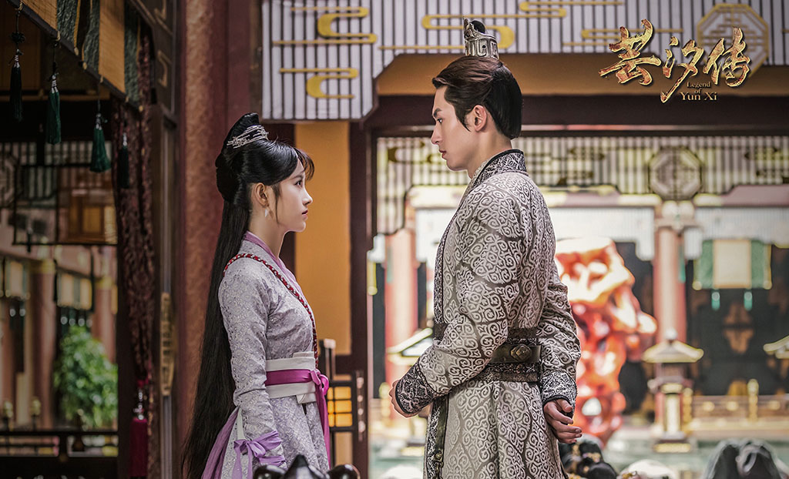
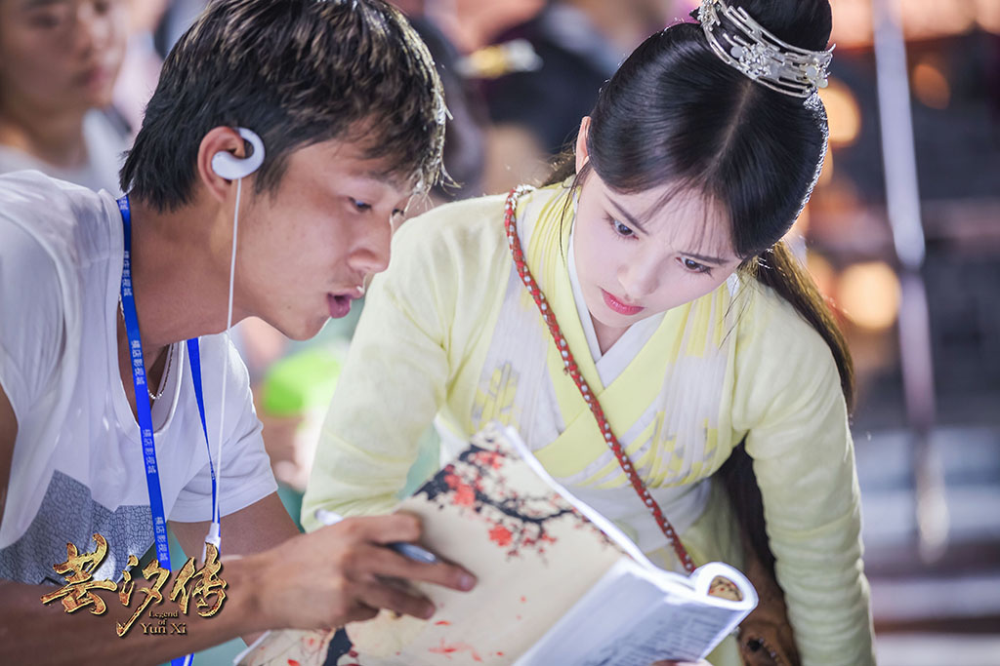
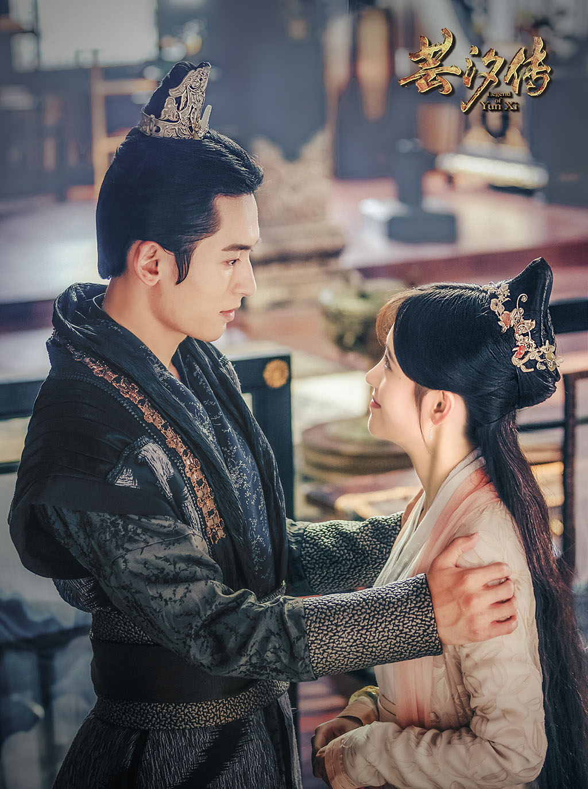
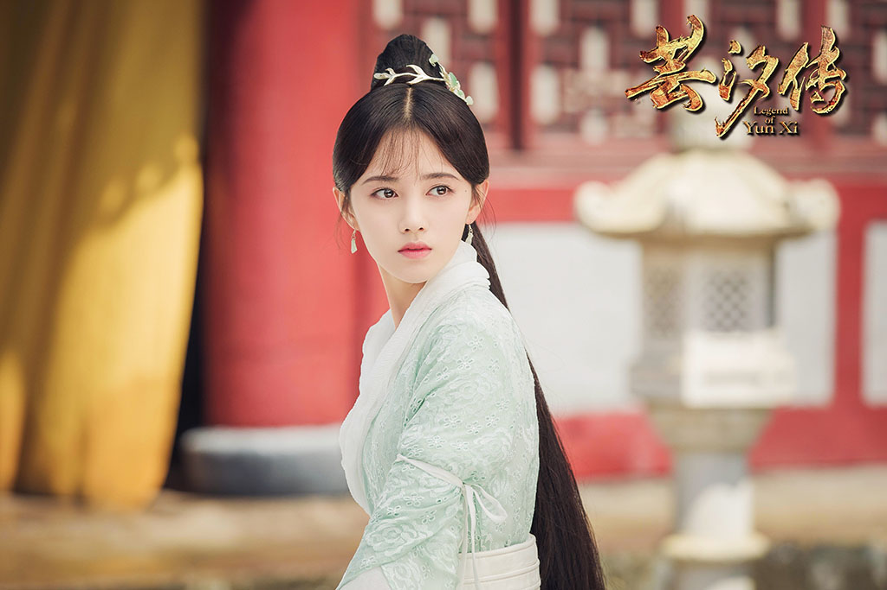
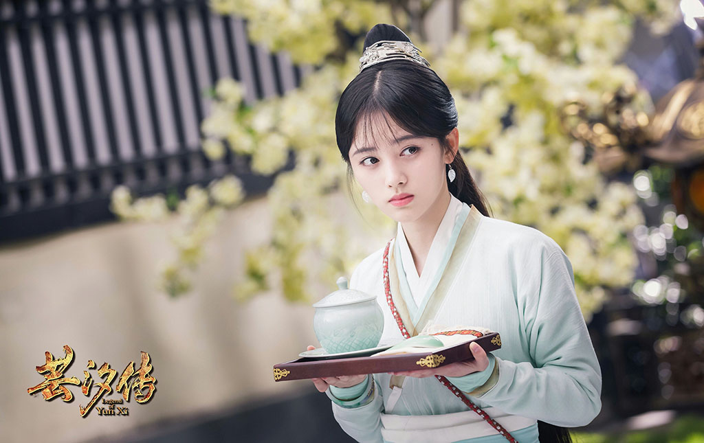
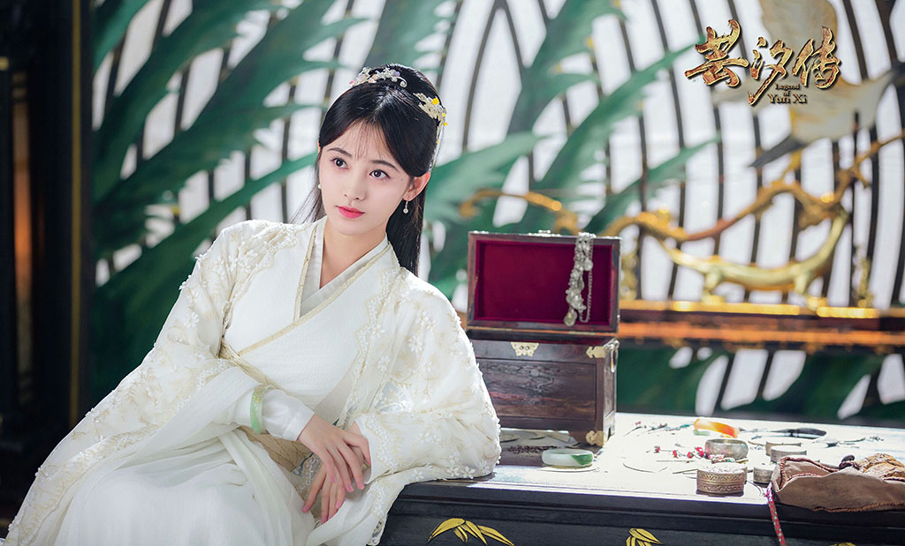

韩芸汐身为太医之女，自幼丧母，历经各种磨难，依然保持积极向上的乐观心态。芸汐颇有医学天赋，精通传统医术，却因此遭受各种妒忌和排挤。机缘巧合之下，芸汐嫁给了秦王龙非夜，从此陷入波谲云诡的宫廷斗争之中。芸汐凭借高超的医术、睿智的头脑和善良的内心，为朝中大臣破解剧毒，帮助秦王识破内奸，为全国百姓解除鼠疫之祸，成功救治感染怪病的太子。芸汐不仅以医者仁心的态度深受百姓爱戴，而且协助秦王打破了各种祸国殃民的阴谋诡计，平息了楚氏兄妹倒行逆施的动乱。经历过一系列人生变故，芸汐的医术更为精湛，而且赢得了秦王的倾心爱慕。两人看淡名利，共同钻研医术，最终离开喧嚣的宫廷，归隐山林，过上了与世无争的幸福生活。
     